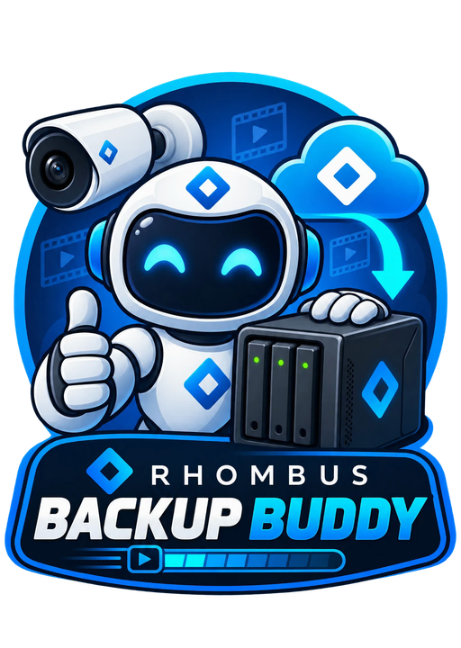

Free · Mac, Windows & NAS/LinuxBack up your Rhombus camera footage to your own drive — an external disk, a NAS, or this computer. Automatic schedules, plain MP4 files, no technical skills needed.
Setup takes about 2 minutes. You'll sign in with Rhombus or paste an API key.
From download to first backup in a couple of minutes.
Grab the app for your computer. On a Mac, right-click → Open the first time. On Windows, click "More info → Run anyway" if SmartScreen asks.
Click Sign in with Rhombus — your normal login page opens and the app sets up its own access. Or paste an API key from the Rhombus Console.
Choose where footage should land, pick a schedule, and click Back Up Now. You'll see a progress bar per camera.
Set it up once — it takes care of itself.
Every hour, daily at midnight — your choice. Enable background mode and backups run even when the app is closed, via Task Scheduler or launchd.
Footage is saved as normal MP4s, organized by date and camera. Every file plays in any video player — no proprietary formats, no lock-in.
Files older than your retention setting (default 30 days) are deleted automatically, so the drive never silently fills up.
Get a message in Slack, Microsoft Teams, Google Chat, or email after every backup — or only when something fails.
Your API access is stored in the Windows Credential Manager or macOS Keychain — never in a plain file.
A problem with one camera never stops the rest. The History tab shows exactly what was backed up, and what failed and why.
Inside the folder you chose — tidy, dated, and readable.
The same app as a Docker container — backups run around the clock with no computer left on.
Works on any Linux server or NAS (amd64 & arm64) — then open http://<host>:8600 on your network.
Step-by-step guide, UGREEN walkthrough, and remote-deploy options:
docs/DOCKER.md
Plan for roughly 1.5 GB per camera per day. The app checks free space before every backup and refuses to start if the drive would fill up.
Only for in-app schedules. If you enable "Also run backups when this app is closed", the backup registers with Windows Task Scheduler or macOS launchd and runs on its own.
No. If you are, keep the same-network option checked for much faster direct downloads. If you're backing up from elsewhere, uncheck it and footage comes via the Rhombus cloud.
Just a Rhombus account. Click "Sign in with Rhombus" in the app, or create an API key with video access in the Rhombus Console under Settings → API Management.
No. The app talks only to the Rhombus API and your chosen folder. Credentials live in your computer's secure credential store, and video files stay on your drive.